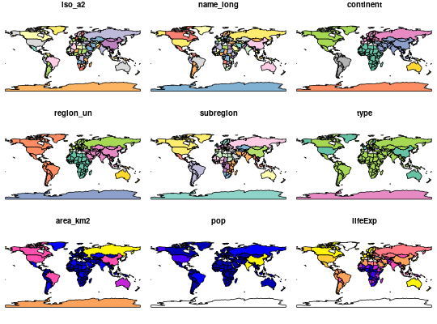

The object loaded is a sf object containing a world map data from Natural Earth with a few variables from World Bank
Formal class 'sf' [package "sf"]; the data contains a data.frame with 177 obs. of 11 variables:
iso_a2 character vector of ISO 2 character country codes
name_long character vector of country names
continent character vector of continent names
region_un character vector of region names
subregion character vector of subregion names
type character vector of type names
area_km2 integer vector of area values
pop integer vector of population in 2014
lifeExp integer vector of life expectancy at birth in 2014
gdpPercap integer vector of per-capita GDP in 2014
geom sfc_MULTIPOLYGON
The object is in geographical coordinates using the WGS84 datum.
http://www.naturalearthdata.com/ http://data.worldbank.org/
See the rnaturalearth package: https://cran.r-project.org/package=rnaturalearth
library(sf) data(world) # or world <- st_read(system.file("shapes/world.gpkg", package="spData"))#> Reading layer `wrld.gpkg' from data source `/home/admin/Science/R/spData/inst/shapes/world.gpkg' using driver `GPKG' #> converted into: MULTIPOLYGON #> Simple feature collection with 177 features and 10 fields #> geometry type: MULTIPOLYGON #> dimension: XY #> bbox: xmin: -180 ymin: -90 xmax: 180 ymax: 83.64513 #> epsg (SRID): 4326 #> proj4string: +proj=longlat +datum=WGS84 +no_defsplot(world)#> Warning: plotting the first 9 out of 10 attributes; use max.plot = 10 to plot all